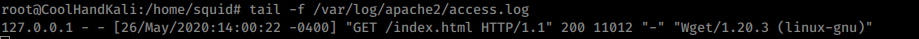
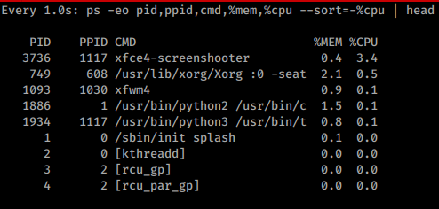

3.7.2.1 Exercises
☐ Start your apache2 web service and access it locally while monitoring its access.log file in real-time.
☐ Use a combination of watch and ps to monitor the most CPU-intensive processes on your Kali machine in a terminal window; launch different applications to see how the list changes in real time.
